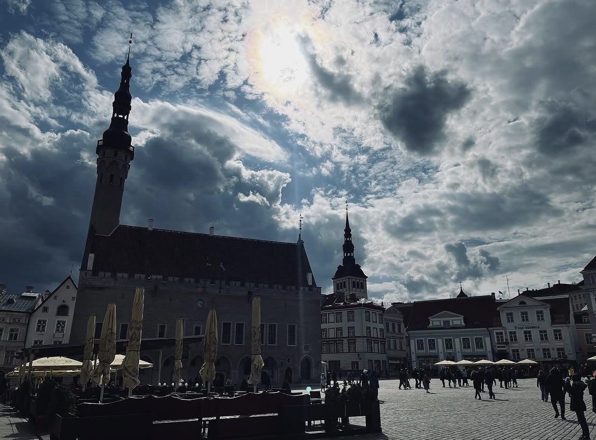
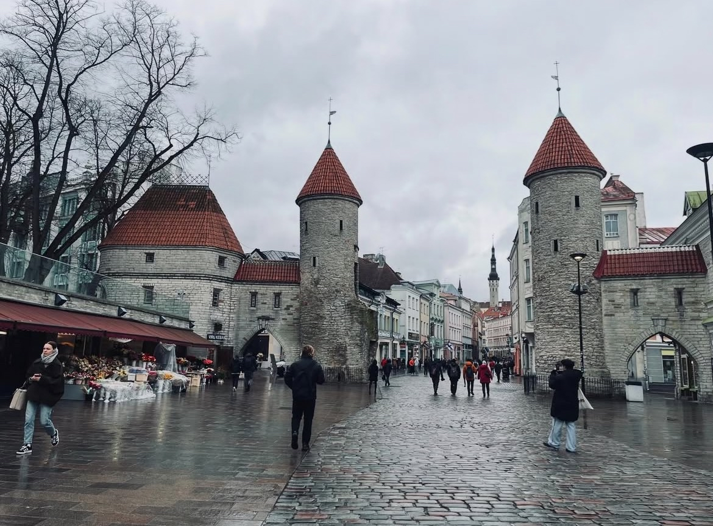
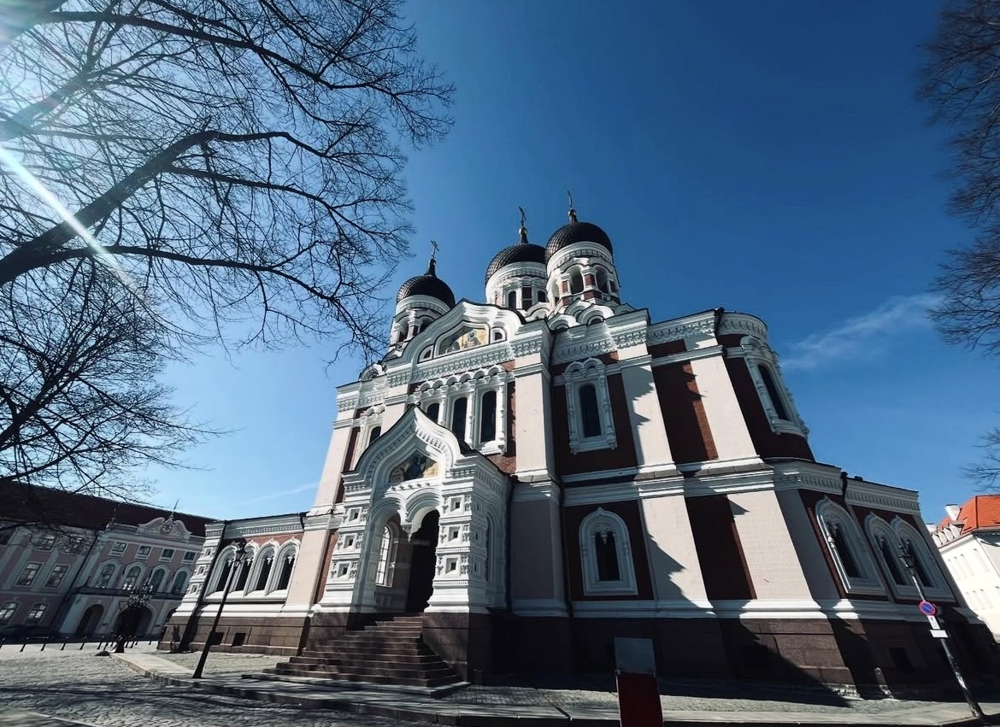

At the end of April 2024, me and Hannah went off to Tallinn, Estonia for a weekend away, and it ended up being one of those trips that completely won us over without needing to try too hard.
We stayed from 26th to 29th April 2024, and from the minute we arrived, Tallinn just felt easy to like. It is compact, really pretty, and full of character. The Old Town is the main thing people go for, and rightly so. It is full of cobbled streets, old towers, church domes, colourful buildings and little hidden corners that make you want to keep wandering.
The best way I can describe it is that Tallinn had this really interesting Scandinavian/Balkan sort of feel to it. It felt clean and calm, but also historic and a bit quirky. We did not do loads of big activities while we were there, but honestly, Tallinn does not really need that. It is the sort of place where walking around and taking it all in is half the point.
Getting There: Cheap and Easy
We flew with Ryanair, and although we cannot remember the exact price now, the flights were definitely fairly cheap.
That is part of what made Tallinn such a good little weekend break. It feels different enough to be exciting, but it is still easy enough to get to from the UK without spending a fortune. For a few days away, that is exactly what we wanted.
Where We Stayed: Citybox Tallinn City Center
For this trip, we stayed at Citybox Tallinn City Center, and our stay came to £125.98 in total for the three nights.
It was a really good base for the weekend. Nothing over the top, just clean, comfortable and well placed for getting about. For the sort of trip where you are out most of the day and just want somewhere easy to come back to, it worked really well.
First Impressions of Tallinn
Tallinn felt calm almost straight away. It has got that thing some cities have where it is obviously popular, but it never felt hectic.

One thing both me and Hannah noticed was how polite the locals were. Everyone we came across felt friendly, respectful and chilled out. Nothing felt awkward, nobody seemed fed up with tourists, and it just made the whole place feel really relaxed. That makes a massive difference on a short city break.
Tallinn’s Old Town is also one of the best-preserved medieval old towns in Europe, which explains why it feels so storybook-like when you are actually in it.
Is Tallinn Good for a Weekend?
Definitely.
I actually think Tallinn is ideal for a short break because it is so walkable. You can see loads without needing to rush, and even if you are only there for two or three days, it still feels like enough time to properly enjoy it.
That was probably one of the best things about it for us. Some city breaks feel like you are constantly trying to cram things in, but Tallinn felt slower in a good way. Me and Hannah never felt like we had to force a packed itinerary just to make the trip worth it.
What We Did: Mostly Walked Around, And Honestly That Was Enough
If I am being honest, we did not do loads of organised activities. Most of our time was spent just wandering around the Old Town, looking at the pretty streets, taking photos, and seeing the main landmarks.
But if you are going to Tallinn and want a few proper things to look out for, there is actually plenty to see.
Town Hall Square
This is one of the main spots you will naturally end up in. It has that classic old European square feel, with historic buildings, cafés and loads of atmosphere. It is the sort of place where you can just stand around for a few minutes and take it all in.
Toompea
This is one of the best areas to wander around if you want the proper Tallinn postcard views. It is where you get the rooftops, the towers and that classic look out over the city. It is 100 percent worth heading up there.
St Catherine’s Passage
This is one of those little medieval-looking bits of the Old Town that feels almost too pretty to be real. It is narrow, quiet and full of character, and it is exactly the sort of place that makes Tallinn such a nice city to just explore on foot.
The City Walls and Towers
Tallinn still has loads of its old walls and towers, which gives the city a completely different feel from a lot of other capitals. You do not just get one or two old landmarks. The history is kind of built into the whole place.

The Russian Orthodox Churches
One of the most eye-catching places we saw was the Alexander Nevsky Cathedral, which is probably the most famous Russian Orthodox church in Tallinn. It sits up on Toompea and is impossible to miss with its onion domes and dramatic exterior.
Even if churches are not normally your thing, this one is worth seeing because it stands out so much against the rest of the city. It was completed in 1900, during the period when Estonia was part of the Russian Empire, which gives it a completely different feel from some of the older medieval buildings around it.

That was one of the things I liked about Tallinn in general. It is not just pretty, it has layers to it. You have the medieval old town, that slightly Nordic feel, and then these reminders of Russian imperial history mixed in as well.
Activities We Would Recommend If You Want To Do More
We were very happy just wandering, but if you want to pad the trip out a bit more, Tallinn definitely gives you options.
A few things that seem worth doing are walking the city walls, heading into Kiek in de Kök and the Bastion Tunnels, spending more time around Toompea Castle and the viewing platforms, and properly exploring some of the churches and museums around the Old Town. There are also plenty of cafés, little shops and hidden courtyards that make the city good for a slower kind of trip rather than a rushed one. Tallinn’s main attractions are quite close together, which makes it ideal for exploring without loads of planning.
Estonian Language Basics
The language was another thing we found interesting. Estonian looks completely different to English, so at first it can feel impossible, but it is still worth learning a few words.
A few useful ones:
- Tere = Hello
- Aitäh = Thank you
- Palun = Please
- Vabandust = Sorry / excuse me
Even if you only remember one or two, I think it is always nice to make a bit of an effort when you are away. Most people we came across seemed to speak good English, but trying a few local words still felt like a good thing to do.
Food: Texas Cantina Was a Great Find
One of our favourite food stops was a Mexican restaurant called Texas Cantina.
Random choice for Estonia maybe, but it was genuinely really nice. After walking around all day, it was exactly the kind of easy, satisfying meal we wanted. It was one of those places that just hits the spot when you are tired, hungry and want something solid.
Obviously if you want to build your whole trip around local Estonian food, you would probably mix in some more traditional spots too, but for us this was just a really good meal in a really nice city.
Fancy Doing Something Different? Get the Boat to Helsinki
One thing worth knowing if you are spending a few days in Tallinn is that you can easily turn it into more than just one city break.
A really good option is hopping on a boat to Helsinki, which you can book through GetYourGuide. The crossing is only about two hours each way, which is kind of mad when you think about it. You can wake up in Estonia and be in Finland the same day without much hassle.
We liked the idea of that because it makes the trip feel even more special. Even if you do not do it this time, it is one of those things that makes you think about going back.
Practical Tips for Visiting Tallinn
- Currency: Estonia uses the Euro
- Language: Estonian, but English is widely spoken in tourist areas
- Getting Around: Tallinn is very walkable, especially around the Old Town
- Trip Length: Two to three days feels about right for a relaxed city break
- Best Approach: Do not overplan it. Tallinn is one of those places that is best enjoyed by just wandering about
Final Thoughts
Tallinn ended up being exactly the sort of weekend away we wanted. It was affordable, easy to get to, really pretty, and just genuinely nice to spend time in.
Me and Hannah loved the whole feel of it. The old town is beautiful, the locals were polite, the food was good, and even though we did not do loads of massive activities, it still felt like a proper memorable trip. Sometimes that is actually the sign of a great place. It does not need to shout for your attention. It just quietly wins you over.
If you want a city break that feels a bit different from the usual choices, Tallinn is such a good one.